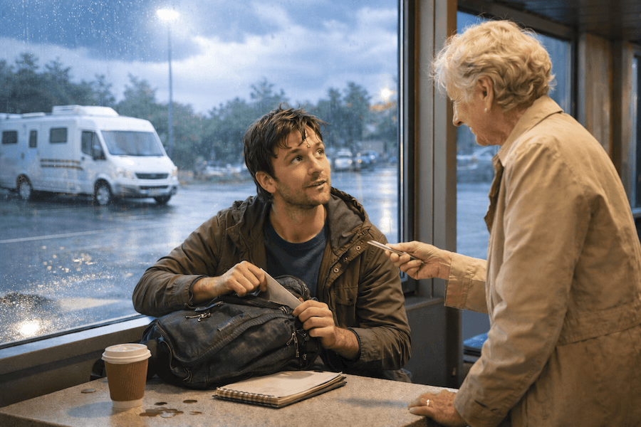

We meet central character Maurice as he is driving down the M3 from London in his campervan during a nasty summer
thunderstorm on his way to the south coastal town of Bournemouth. He sings and plays guitar in the street for a
living, but due to the Londoners giving him a wide berth, he believes working the south coast in the summer is a
good plan.
As the thunderstorm seems relentless, he decides to pull into the next service station and give himself a serious
talking to. Sitting at a table in the café area, he fumbles around in his backpack for a pen to make some notes on
his finances when an elderly lady appears and offers him one.

3 Series, 7 Episodes
01
He earns a paltry living as a street busker, but with his music not working too well in south London, after
a doughnut for breakfast, he's left believing his luck will change in the seaside town of Bournemouth.
02
You are now in a motorway service station in southern England in the summer of 1997 and have met the two
main characters of Nobody's Child.
03
You can, of course, guess what happens next but not being one for dealing out spoilers the offer of the
first three episodes being sent to you for free suggests the plot will unthicken.